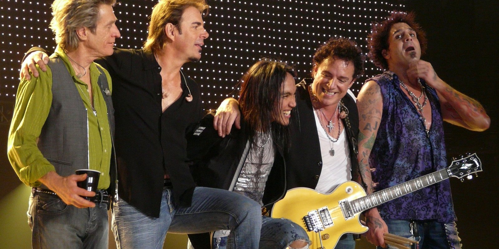
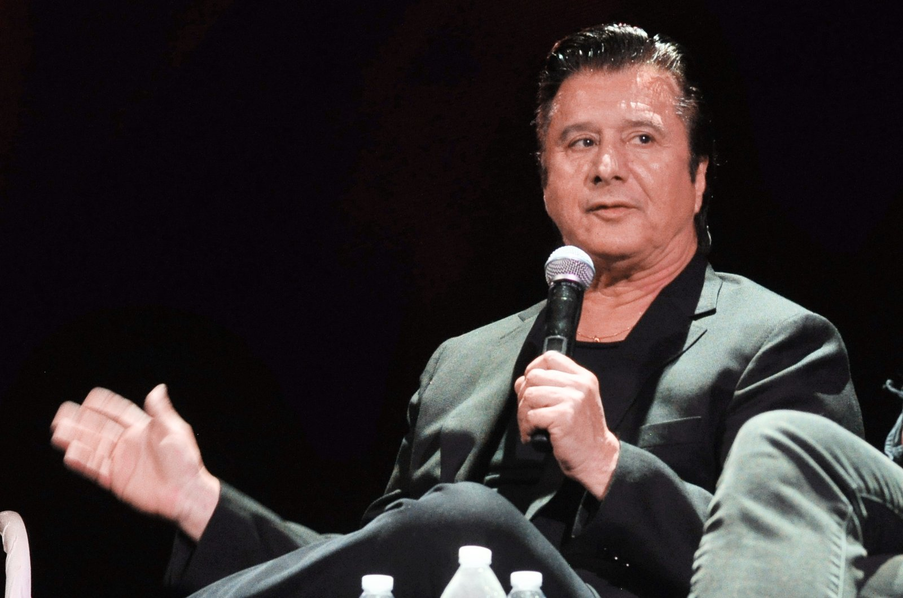
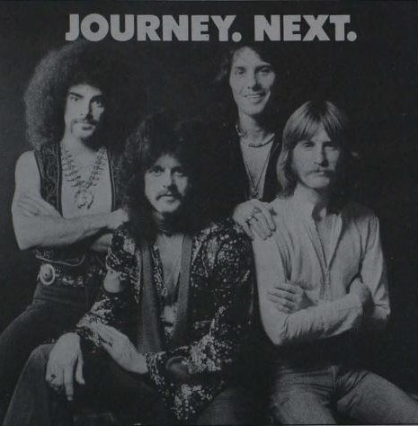

Why Journey
ARTS & CULTURE · SEPTEMBER 12, 2026

I've been meaning to write about music here, and the honest place to start is with the band I'd pick if I could only keep one. That's Journey. It has been for most of my life, and I don't expect it to change. This is the first entry in what I intend to be a long, slow series about them — one that I'll add to over months and probably years, because the band's history is fifty-odd years and sixteen studio albums long, and mine with them is forty-odd years long too, and neither fits in a single post.
So let me set out the rule for the series first, because it's the thing I had to work out before I could write a word of it.
Not a History
The history of Journey has already been written, several times, by people who were there. There's a fine long Wikipedia article. There are documentaries. There are memoirs. If I wrote "the history of Journey," I'd be summarizing those, and you'd be better off reading them. What nobody else has is my Journey — which record arrived when, how it got to me, what I was doing when it did — and that's the only part I can write that's worth reading.
So each entry in this series will be one record (or, sometimes, one song, when a single song carries it), and each will have two halves. The first half is the record: what it is, who made it, what was going on in the band, with real sources. The second half is where I was. The records won't come in release order; they'll come in the order they reached me, which is a very different thing and, I think, the more interesting one. Every entry will carry the tag journey, so that page becomes the index of the series as it grows.
Why It Had to Be the Eighties
I was born in the summer of 1971. That means Escape came out when I was ten, Frontiers when I was eleven going on twelve, and Raised on Radio when I was fifteen. Journey came into my life in the eighties, during about the most impressionable years a person has, and I don't think that's an accident of taste so much as a fact about how memory works. As a young person you form your memories around the music you hear at the time. It's the soundtrack that gets laid down first, and everything you hear afterward is measured against it.
It turns out this is something psychologists have actually measured. The music people love most, for the rest of their lives, clusters heavily around what they heard in their teens and early twenties — the "reminiscence bump," as the memory researchers call it — and it holds even for songs from before a person was born, if their parents were playing them. I didn't need the study to know it was true of me, but I like knowing it isn't just me.
And what Journey sang about, in those years, were very emotional things. Leaving and staying. Being on the road and being faithful anyway. Holding on. That's a lot for a ten-year-old to take in, and I think that's exactly why it took. You don't fully understand "Open Arms" at ten. You do understand that the person singing it means it.
The Voice
I was a Steve Perry fan, like most people who came to the band when I did, and I want to be plain about what that means, because it's the center of the whole thing for me. Journey has had a lot of members and five singers. But for me, and I suspect for anyone who found them in the years I did, Steve Perry is the voice. Not a voice. The voice. When I say the songs were about emotional things and that a ten-year-old could tell the singer meant it, that's who I'm talking about. Take him off those records and what's left is a very good band. With him on them it's the band I'd keep over every other one.
Here is what I've learned about him since, most of it long after I'd already decided.
He was born Stephen Ray Perry in January 1949 in Hanford, California, in the San Joaquin Valley — a farm town, not a music town — to Portuguese parents whose families had come from the Azores. His father sang. He grew up on the valley's radio and on Sam Cooke, whose phrasing you can hear in him once you know to listen for it. By his late twenties he'd spent the better part of a decade trying to make it, in one band after another, and in 1977 he was in one called Alien Project that had finally gotten the attention of a label — and then the band's bass player was killed in a car accident, and Perry went home to Lemoore and decided he was done. That's when Journey's manager, Herbie Herbert, who'd heard the Alien Project demo tape, tracked him down. Perry was twenty-eight. His first appearance with the band was on stage in San Francisco that October, and Infinity, the first album with him on it, came out in January 1978 and gave them "Lights" and "Wheel in the Sky." Within a few years they were one of the biggest bands in America.

What he had, technically, was a high, clear tenor that stayed clean at the top of its range where most rock singers go to grit — the reason a Journey chorus sounds like it's opening a door rather than kicking one in. Rolling Stone put him on its list of the hundred greatest singers, and the nickname that stuck, "The Voice," is usually credited to Jon Bon Jovi, which tells you what the other singers thought. But the technical part isn't the part that got me at ten. The part that got me is that he sounds like he means it. There is no irony anywhere in a Steve Perry vocal. He is not standing slightly outside the song, the way a lot of singers do to protect themselves. He's all the way in.
He wrote, too — that's the part people forget. "Don't Stop Believin'" is Perry, Neal Schon and Jonathan Cain. "Open Arms," "Who's Crying Now" and "Separate Ways" are Perry and Cain. "Lights" and "Any Way You Want It" are Perry and Schon. The exception that proves it is "Faithfully," which Cain wrote alone on a napkin on a tour bus — and which nobody but Perry could have sung. In 1984, at the height of it, he made a solo record, Street Talk, and "Oh Sherrie" went to number three; it's the one Journey-adjacent song of the decade that isn't a Journey song, and it belongs in this series too.
And then, at the end of the Raised on Radio tour in early 1987, he stopped. Not dramatically — he was worn down, his mother had died while the record was being made, and he went home to the valley. The band stopped with him, because there wasn't a band without him. Nine years later he came back for Trial by Fire; I'll get to what happened after that in a minute. He has sung in public a handful of times since — a run of songs with the band Eels in 2014, out of nowhere, his first in nineteen years — and in 2018, at sixty-nine, he made an album called Traces, after the death of the woman he'd been with, having promised her he wouldn't go back into hiding when she was gone. When Journey went into the Rock and Roll Hall of Fame in 2017 he was there and spoke, and didn't sing. He'll get his own entry in this series, probably more than one. He's the reason there's a series.
The Ones Before
Perry joined in 1977, and Infinity is where most of the world's idea of Journey begins. What I didn't know at the time — what I don't think I was even aware of — is that there was a band called Journey for four years before that. Neal Schon and Gregg Rolie had come out of Santana in 1973 and made three albums of long, jazz-tinged, mostly instrumental rock with Rolie singing what vocals there were, and the records didn't sell, and the label told the band to find a frontman.

I enjoyed some of those songs without knowing what they were. It was only later, as an adult, that I went back and listened to the Rolie years on purpose, and came to appreciate that early history — the fact that the band which wrote "Faithfully" was, not long before, something closer to a fusion group with a keyboard player from "Black Magic Woman" out front. That's going to be its own entry, or several. I'll write it as what I am, which is a fan who got there late, rather than pretending I was listening to Look into the Future in 1976 at the age of five.
The Nineties, and the Song I Missed
Then the nineties. Perry left after the Raised on Radio tour, the band stopped in 1987, and for most of the decade there simply wasn't a Journey. I was disappointed by that, in the way you're disappointed by something you can't do anything about. And here's the confession this entry has been working toward: in 1996 the classic lineup — Perry, Schon, Cain, Valory, Steve Smith — got back together and made Trial by Fire, and its lead single was "When You Love a Woman," and it went to the top of the adult-contemporary chart and was nominated for a Grammy. And I didn't know it existed. I honestly went four or five years without knowing that song was out. I can't tell you why. I was twenty-five, I had a life, the radio I listened to evidently wasn't playing it, and somehow a new Journey single by Steve Perry went straight past me.
When I finally heard it, years after everyone else, it went straight in. It is now, I think, my favorite song of theirs — of all of them — and it has the odd distinction of being a song I associate with the wrong year. The band never toured the record: Perry's hip gave out — a degenerative bone condition, diagnosed after a hike — and the rest of the story is one you may already know, in which the band waited, and then didn't, and Perry never sang with them again. That's an entry of its own too, and not an easy one.
The One Time I Saw Them
The time I saw Journey in person was in Fayetteville, Arkansas, at Bud Walton Arena, at one of the concerts Walmart puts on for its associates and shareholders during its annual-meeting week. The singer was Arnel Pineda — the man Neal Schon found on YouTube — so it was 2008 or later, and it was not the Steve Perry band. What I can't give you is the year. Those shows are a private event for the company's people rather than a tour date, so they don't turn up in the setlist archives the way a regular concert does, and I've looked. I'll write the night up properly as its own entry once I've pinned it down; I'd rather say that than make it up.
What Comes Next
The first record entry will be Escape, because that's the one that got my attention and made me a fan. Then the rest of the eighties in the order I met them, which ends at Raised on Radio — and I'll say now that Raised on Radio, not Escape, is my favorite Journey album of all, which is not the popular answer and will take an entry of its own to defend. Then backward into the Rolie years, as a latecomer; then the long strange story after Perry — Steve Augeri, Arnel Pineda, the band that has now outlived its most famous singer's tenure by decades, and the fact that a song from 1981 became, of all things, the best-selling digital track of the twentieth century on the strength of a television finale and a high-school choir show. There is a lot to write. I'm in no hurry.
If you have a Journey of your own — a first album, a first song, a show you were at — I'd like to hear about it. The address is below. And if you happen to know which year Journey played the Walmart week in Fayetteville, you'd be saving me a search.
Where I Could Be Wrong
The memories are mine and I've tried to say only what I actually remember. The band facts are from the sources below and I've kept them to the ones that don't move — dates, lineups, what charted. The Fayetteville show is what I remember — the venue, the occasion, the singer — but I haven't been able to find a record of it, so the year is still open; I've said so above and I'll fill it in when I know.
Sources
- Wikipedia. Journey (band) — the lineup and album chronology used throughout. https://en.wikipedia.org/wiki/Journey_(band)
- Wikipedia. Trial by Fire (Journey album) and When You Love a Woman — the 1996 reunion, the single's chart run and Grammy nomination, and the tour that never happened. https://en.wikipedia.org/wiki/Trial_by_Fire_(Journey_album)
- Krumhansl, C. L. and Zupnick, J. A. Cascading Reminiscence Bumps in Popular Music. Psychological Science 24(10), 2013 — the finding that musical memory clusters in adolescence and early adulthood, and inherits from parents. https://doi.org/10.1177/0956797613486486
- Wikipedia. Steve Perry — Hanford, the Azores, Alien Project, the 1977 hiring, the 1987 stop, Eels 2014, Traces. https://en.wikipedia.org/wiki/Steve_Perry
- Rolling Stone. 100 Greatest Singers of All Time (2008) — Steve Perry at No. 76. https://www.rollingstone.com/music/music-lists/100-greatest-singers-of-all-time-147019/
- Rock & Roll Hall of Fame. Journey (inducted 2017). https://rockhall.com/inductees/journey/
- Photographs: Matt Becker, Journey, live in Minneapolis, 16 September 2008, CC BY 3.0; Joe Mabel, Steve Perry, Pop Conference 2019, CC BY-SA 4.0; and the anonymous 1977 trade advertisement for Next, public domain — all via Wikimedia Commons.